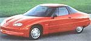

BITS & PIECES
GM's silent EV1: No emissions, but a booming stickerprice.
When you hear about someone spending $25,000 on acar, you might dream for a moment of yourself behind the wheelof, say, a pale yellow convertible, your purebred retrieverhanging his head out the back...
Outside your fantasies, you'reprobably too practical to spend that kind of money on any car,but as long as we're fantasizing, what if you could get yourhands on a car that comes with this guarantee: "You will neverhave to go to the gas station again." How much would you bewilling to pay for that?
General Motors promises to be the firstcar company to mass-produce an electric vehicle that does indeedcome with this guarantee and does indeed sell for $25,000. TheEV1, or "Impact" (a name perhaps better replaced by one with lessunfortunate connotations?), will be available this fall at Saturndealers in four western cities: Los Angeles, San Diego, Phoenix,and Tucson. Like your pale yellow convertible, it's a two-seater,but EV1 is equipped with a double-lead battery that runs 70-90miles per charge. GM says the electric car has power everythingand comes with dual air bags, antilock brakes, a CD player, andcruise control and functions in all other ways like a regular carexcept it makes no noise and has zero emissions.
Lucy Zielinski,GM's electric vehicle spokesperson, says the EV1 will probably bemost appropriate for households with two cars. People can use itfor commuting and errands rather than road trips since you needto refuel (plug in) about three times as often as a conventionalvehicle. You can carry a convenience charger in your trunk, "kindof like a spare tire," Zielinski says, which tops off thebatteries in about eight hours, or accomplish the same at home inabout three hours with a larger 220-volt charger.
EV1 may not bea convertible, but thankfully it isn't the anemic little wheezerwe were anticipating either. It can go from Omph to 60mph ineight and a half seconds, a feat rarely matched by mostgas-engined cars, and some test models have even been settinghigh-performance records. Recently an electric-powered Italian EVset a speed record of 188.9 mph, says Michael Coates of Green CarMedia, a California group that defines itself as an "independentalternative fuel research organization." GM also has plans tomarket an electric pickup truck nationwide in 1997 for use incommercial fleets. The truck, a Chevy S-10, will be mostappropriate for predetermined routes where the truck comes backto a garage every night.
Though the technology for this type ofvehicle has existed for some time, Zielinski says GM beganmanufacturing the car to be marketed because "there's finally ademand." In fact, pollution created a market for the car. Since1990, the California Air Resource Board (CARB) has hadregulations requiring that two percent of all light-duty vehiclesoffered for sale in California in 1998 must emit zero tailpipeemissions. This increases to five percent in 2001 and ten percentin 2003, with similar regulations going into effect in New Yorkand Massachusetts, though in this political climate, allemissions requirements could be repealed before they are enacted.
Predictably, just about everybody in the car or battery businessis experimenting with electric vehicles in an effort to keep GMfrom stealing the market. Honda has an electric test model theycall the CRX; Chrysler plans to convert a test model minivan tomass market by 1998, but the expense of this conversion willdrive its price into the $100,000 stratosphere. As for batteries,nickel-metal hydride models that would eliminate lead and cadmiumfrom the battery manufacturing process will soon be available.They take a longer charge and last the lifetime of the vehicle.
Still GM's $25,000 price seems like a lot of money for a car thatshould actually be very simple to make. But U.S. Department ofEnergy studies claim that by the year 2000 the cost of owning andoperating an EV should reach parity with gas-powered vehicles,and in states with emissions requirements, a 10 percent taxcredit is available to you when you purchase an EV. Once youfigure in the cost of health care and environmental damage fromemissions of gasoline-powered vehicles, electric vehicles startgetting cheaper. A study by the Institute of Economic andEnvironmental Studies of California State University, Fullerton,estimated that a failure to sufficiently clean up the air in theLos Angeles region will cost $10 billion a year in health costs.Even at $25,000 a pop, $10 billion a year could purchase quite afleet of electric vehicles.
-Molly Miller
Gasoline of the future?
Here's a novel idea:Margarita's for your car, because as it turns out, triple sec andlime juice aren't too far from the ethanol fuel USDA scientistshave started making from citrus waste. Although in 1994 ethanolproduction peaked at 1.1 billion gallons and this number isexpected to continue growing, it is still very much a fringeactivity in the fuel industry. Production is expected toincrease, however, and alcohol-blended gasoline is expected to bea strong factor in meeting the future demands for oxygenation inreformulated gasolines, which, in turn, make them cleanerburning.
In the past, the more than 800,000 tons of citrus wasteproduced by growers was dumped onto pastures where it either tookits natural path and fermented or was eaten by livestock. But ascrop production increases, it is becoming increasinglyimpractical to continue treating the waste in this way. USDAchemist Dr. Karel Grohmann notes that "citrus processors nowconvert the waste to low-value animal feed, which is not veryprofitable, bringing only 3-5 cents per pound," so the cost ofdrying the waste is higher than the market value of the feed. Byconverting citrus waste into fuel, a profitable system would beestablished to provide economic opportunities and benefit theenvironment.
As we all know by now, one of our current problemswith the energy sources we use is that their production andcombustion releases huge amounts of C0 2 , a "greenhouse" gas.Dr. Grohmann does not foresee this as a problem with citrus wasteconversion, however. There are three byproducts of this process:ethanol, a bio-fuel; carbon dioxide; and acetic acid, used inmaking vinegar and other foods. The percentage of C0 2 to ethanolproduced is about 50/50, but, Grohmann explains, "This C0 2 canbe cycled back into plants and organisms quickly because it is aclosed cycle, unlike the case with fossil fuels. When we burnfossil fuels, we burn materials that have accumulated forbillions of years," thus throwing off the natural cycles of C0 2absorption. Additionally, the amounts of C0 2 emitted as abyproduct of citrus waste conversion are considerably lower thanthat emitted by fossil fuel combustion. The wide-scaleintegration of ethanol would provide a clean-burning,domestically-produced, relatively nontoxic and non-carcinogenicfuel.
It would also promote the international position of theUnited States by reducing our dependence upon other countries foroil. Grohmann sees this project as "strategically importantbecause we are currently spending $50 billion yearly in tradedeficit on oil." If we took after Brazil, a country that runsabout 1 million cars on alcohol converted from sugarcane, we'd bein a better situation. America already does produce alcohol fromcorn sugars, but not nearly enough of this alcohol is producedyearly to make any substantial shift in consumption. We need toincrease production at least tenfold before we can blend allgasoline with ethanol or alcohol and make a dent in fossil fueldependence.
-Jessica Bolson
|
 |
|
|